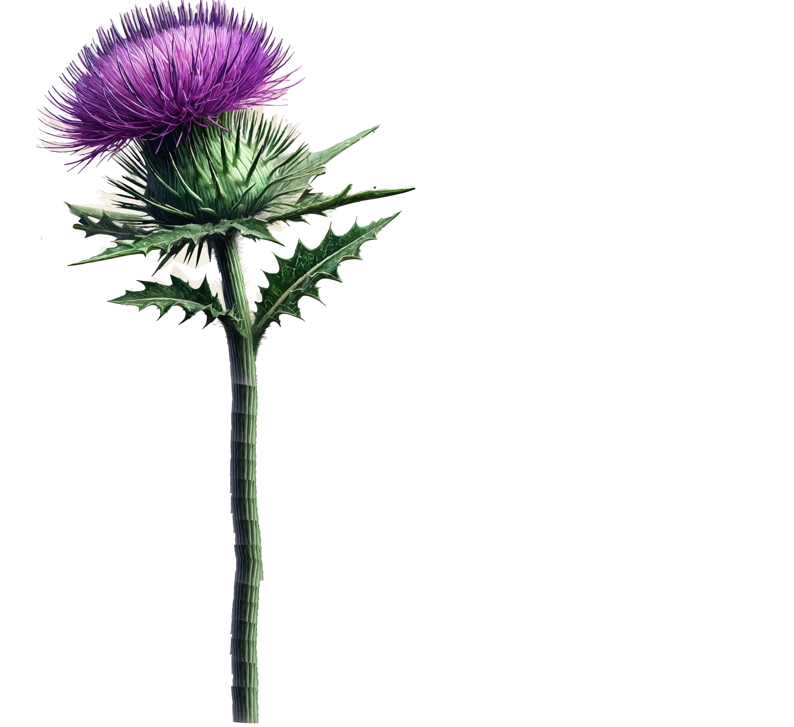
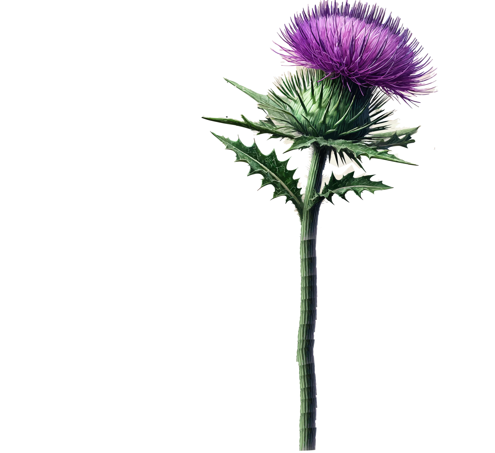

About Tutor Scotland
We are dedicated to helping all children grow through personalised tutoring and innovative learning experiences.
Our mission is to provide quality education and support for students no matter their background or circumstance.